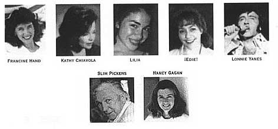

COMMENTS on "DEMOS & DIAMONDS" by Jim Terr and Friends
"Some of the most thoroughly enjoyable tunes I've ever heard...tiny
monuments to songwriting...For whatever elements came together to make the
genius of Jim Terr and his music happen, we should be truly gleeful, grateful
and gratified. 'Demos and Diamonds' is a square meal of music, a walk around
town when all the lights are out and your first kiss, all over again."
-Bill Hutchison,
Santa Fe Reporter
New Mexico Singer/Songwriter Releases Debut CD after 27 Years in the Business!
This is one of the most enjoyable albums that
I have listened to in ages. So country, so interesting and so entertaining.
What more could one ask for from music?
[Jim Terr has been] described as a modern day Mark Twain, Will Rogers, Jimmie Rodgers and Jackie Mason rolled into one. Can I add to that list names like Shel Silverstein, Tom T. Hall, Bobby Bare, Ray Stevens and the likes--master wordsmiths all, and country boys too.
This guy could quite easily make our stone country section on all counts. Yes, he is that good...this selection barely scrapes the surface of his huge talent...a killer songwriter and storyteller...
["Did It Hurt?"] I just cannot stop laughing... ["The Call"] I find it most delightful as I do the whole album...
...all of the guests give stellar performances...
-Brian Ahern
Country Music & More (UK)
A Late Starter!
...an impressive line-up of guest artists from New Mexico, California, Hawaii and Nashville. These include "Bluegrass Vocalist of the Year" Kathy Chiavola, Elvis impersonator Lonnie Yanes, the late western actor Slim Pickens, country music trucking star Buddy Converse and the Sneakers, Sara Jo Rubenstein, and Lilia.
-Country Music Round-Up (UK)
Terr's CD spans parody, eye-opening sincerity
...Terr produced an entire album by [Slim] Pickens, including the Guy Clark song Desperadoes Waiting for a Train--which Clark says is his favorite cover version of any of his tunes.
My favorite tune [on the CD] is a recent one--Reader's Digest Me... There's not a speck of cynicism in this song, no hipster sneer or yuppie smirk...Terr's simple sincerity in this song and one about his father's death (The Call, 1986) is eye-opening.
-Steve Terrell, Santa Fe New Mexican, "Pasatiempo"
British Country Music Bulletin:
An entertaining, description-defying collection... If one were to invite comparisons, you'd perhaps liken Jim Terr to Tom T. Hall, or, perhaps Paul Craft.
Comments on previous
Jim Terr work:
"Wise, witty and whimsical (and sometimes sad)" -Tony Hillerman
"Bodacious" -Dave Barry
"Terr is clearly a menace to musical serenity, and we advise purists in all genres to keep their distance"
-Ed Morris, BILLBOARD
"A cross between Tom Lehrer and Ray Stevens...sorely needed comedy in these uncertain times."
-Country Music People (UK)
Comments on 2005 CD, Jim Terr & friends,
"Please Cut My Song, Mr. Travis"
"Combining comedy with tragedy, optimism with hopelessness and prolific wit with his favorite three chords, Jim Terr's songs are triumphant anthems to this difficult business of living. He shares equal territory with the folksy politicism of Phil Ochs, the sheer songwriting skill of Townes van Zandt, and the shamelessly naive sense of ironic humor of Loudon Wainwright III."
-Bill Hutchison, Anthologist's Cabinet
"Jim Terr's spirit shows through consistently in his songs... It's the droll, sardonic,
'cut-the-B.S.' outlook known around the world as American." -James Fallows
|

CD Features These and Other Artists!
Francine
Hand, Kathy Chiavola, Lilia, Edie, Lonnie Yanes, Slim Pickens, Nancy Gagan
See Next
Page for More Information and Reviews